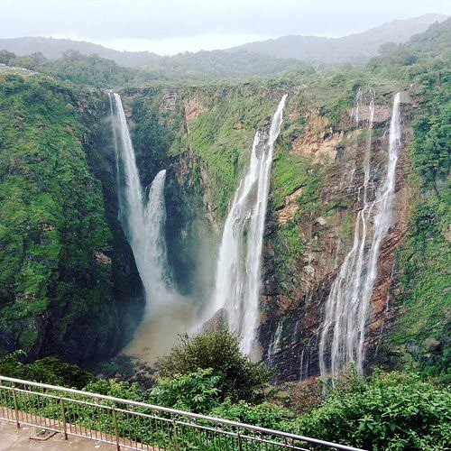

Waterfalls and Hill Stations
Waterfalls

- Jog Falls
Located in Shivamogga district, Jog Falls is one of the highest waterfalls in India. It is formed by the Sharavathi River and is especially spectacular during the monsoon season.
- Abbey Falls
Located near Madikeri in Coorg, Abbey Falls is surrounded by lush greenery and coffee plantations. It is a popular tourist attraction.
- Shivanasamudra Falls
Located on the Kaveri River, Shivanasamudra Falls is known for its beautiful cascading water and scenic surroundings.
- Iruppu Falls
Situated in Kodagu district, Iruppu Falls is surrounded by forests and is a popular destination for nature lovers.
- Gokak Falls
Located in Belagavi district, Gokak Falls is famous for its horseshoe-shaped waterfall and picturesque natural surroundings.
Hill Stations

- Coorg
Coorg is known for its coffee plantations, green valleys, misty hills and pleasant climate. It is also called the Scotland of India.
- Chikmagalur
Chikmagalur is famous for its coffee estates and mountain landscapes. Mullayanagiri, the highest peak in Karnataka, is located here.
- Nandi Hills
Located near Bengaluru, Nandi Hills is famous for its sunrise views, pleasant weather and scenic beauty.
- Kudremukh
Kudremukh is known for its beautiful mountain ranges, grasslands and biodiversity. It is a popular destination for trekking and nature exploration.
- Agumbe
Agumbe is a scenic hill destination in Shivamogga district, known for its rainforests, biodiversity and beautiful sunset views.